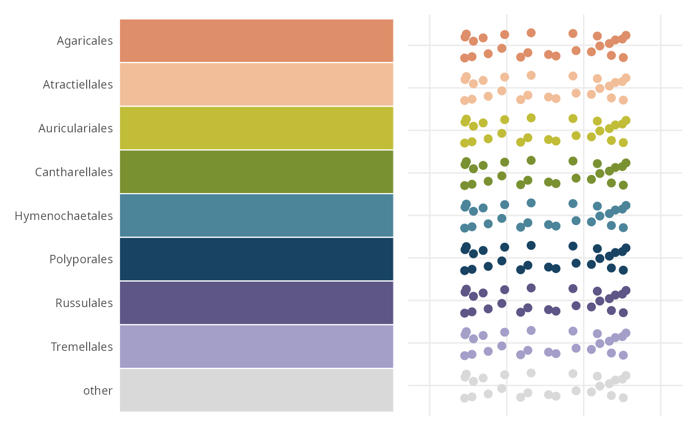
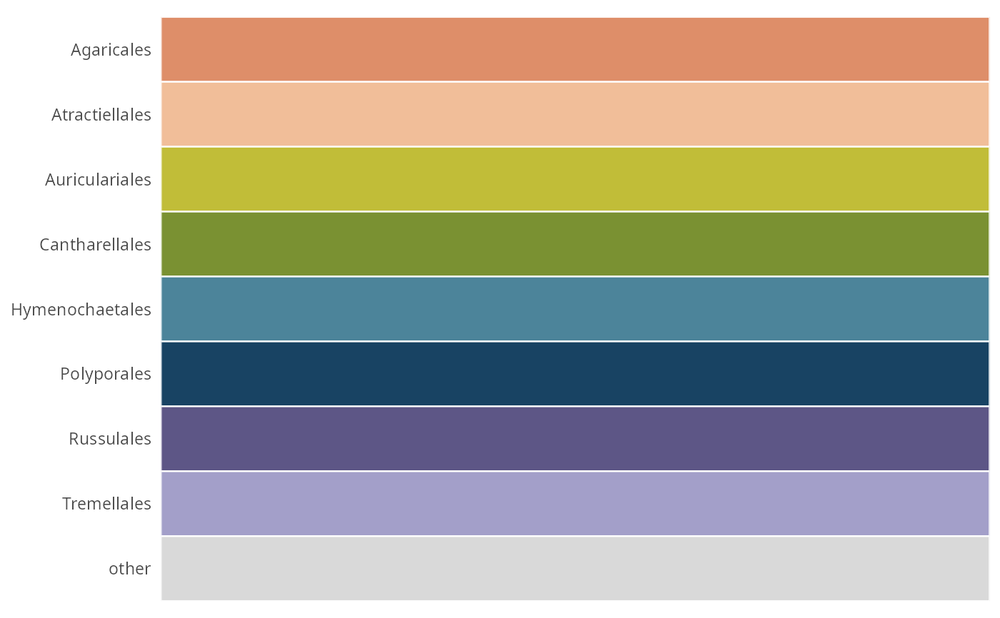
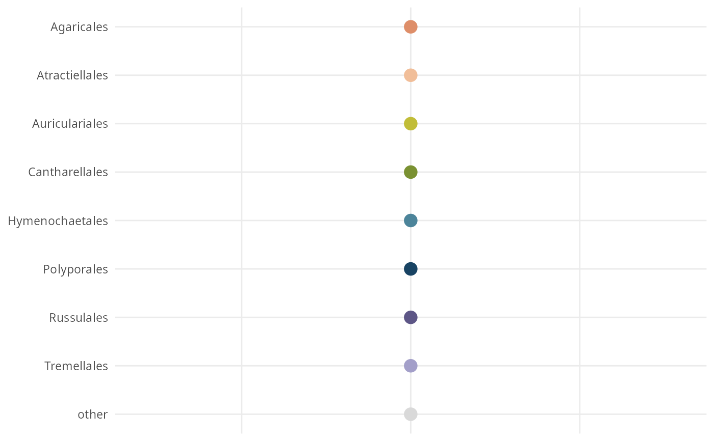

Renders a palette as swatches, as points, or both – the default, because the two views answer different questions and a palette should pass both. Given a phyloseq object instead of a palette, it lists every palette the object carries, which answers the question a long document eventually raises: which colours has this object already been given?
Arguments
- x
(pq_palette, phyloseq or named character, required) The palette to draw, or an object whose palettes should be listed.
- geom
(character, default
"both")"both","tile"or"point". The default puts the swatch view and the point view side by side.- point_size
(numeric, default
2.5) Point size for the point view. Set it to the size the real figure will use; the default is about what an ordination draws.- n_preview
(integer, default
25) Number of points drawn per level in the point view. Above 1, each level becomes a small cloud, showing what overplotting will look like. Ignored by the swatch view.- label
(logical, default
TRUE) Show the level names.
Value
A ggplot2::ggplot object, or a patchwork object when
geom = "both".
Why a point view
Two colours that are obviously different as large flat swatches can be
indistinguishable as 3-pixel dots. A palette destined for an ordination or a
scatter plot has to be judged at the size it will actually be drawn, which
geom = "point" does and geom = "tile" cannot.
n_preview goes further and repeats each level as a small cloud, so
overplotting is visible too. The scatter is deterministic, not random: the
same palette always draws the same preview.
Nested palettes
A palette built with nested is faceted by parent, so each parent's
gradient can be read on its own. This is the fastest way to see that a
parent holds more leaves than its lightness ramp can carry.
Examples
# \donttest{
data(data_fungi_mini, package = "MiscMetabar")
pal <- palette_tax_pq(data_fungi_mini, "Order", n = 8)
#> Using the colourblind-safe "Rattner" IdEst palette for 8 levels.
# Both views at once: swatches, and a cloud at ordination point size
show_palette_pq(pal)

# One view only
show_palette_pq(pal, geom = "tile")

show_palette_pq(pal, geom = "point", point_size = 4, n_preview = 1)

# }
if (FALSE) { # \dontrun{
# Every palette the object carries
ps <- palette_tax_pq(data_fungi_mini, "Order", n = 8, add_to_phyloseq = TRUE)
show_palette_pq(ps)
} # }